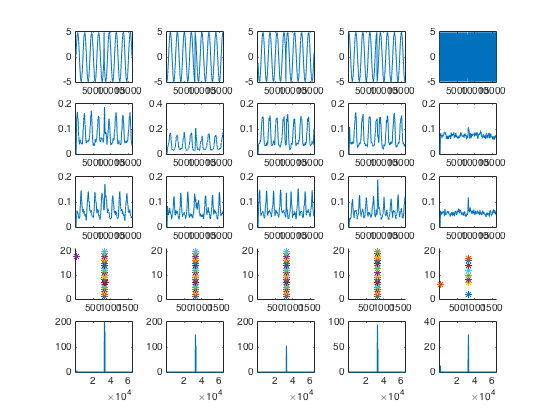

This is the readme for the matlab model associated with the paper: T. Aumentado-Armstrong, M.G. Metzen, M.K.J. Sproule, M.J. Chacron (2015) Electrosensory midbrain neurons display feature invariant responses to natural communication stimuli. PLoS Comp Biol doi:10.1371/journal.pcbi.1004430 These files were contributed by Maurice Chacron. Note: The matlab model requires a data folder after it is expanded from this additional source (100MB): http://senselab.med.yale.edu/modeldb/data/183077/070715-PCB_Paper-ScriptsAndData.zip Download this additional file, expand, and then run by typing MasterLocalCaller at the matlab prompt after making sure you are in the directory that contains the Data subfolder. After less than a minute you should see a figure that looks like this:  Description of contents - The Data folder contains the processed data for all the ELL and TS cells used in the paper, in addition to some metadata with each one. It also includes the input data files for running the model neuron. - The scripts include: The MasterLocalCaller file, which runs a TS - neuron simulation directly, with the input parameters at the - top of the file. The NSUtils class, which contains static - functions for running simulations, processing data, and - plotting. AlphaSynapse and TorusNeuronMod are also just - helper files for the model (container types) to make the - code more readable. DifferentialEvolution.m, which runs the - evolutionary parameter optimization algorithm described in - the paper. --- Tristan Aumentado-Armstrong 070815